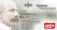

Previous Seasons
2025–2026 Season
| Date | Programme | Venue | |
|---|---|---|---|
| Poulenc, Les Biches; Gregson, Tuba Concerto; Sibelius, En Saga; Stravinsky, Firebird Suite | St Giles Cripplegate | ||
| Coleridge-Taylor, The Bamboula; Rachmaninoff, Rhapsody on a Theme of Paganini; Vaughan Williams, Job: A Masque for Dancing | St John’s Waterloo | ||
| Holst, Ballet from The Perfect Fool; Korngold, Violin Concerto; George Lloyd, Symphony No. 4 | St John’s Waterloo | ||
| Lili Boulanger, D’un Matin de Printemps; Bantock, Russian Scenes; Gipps, Oboe Concerto; Elgar, Symphony No. 1 | St Giles Cripplegate |  |
|
| Summer concert | Langton’s Lakeside, Havering |